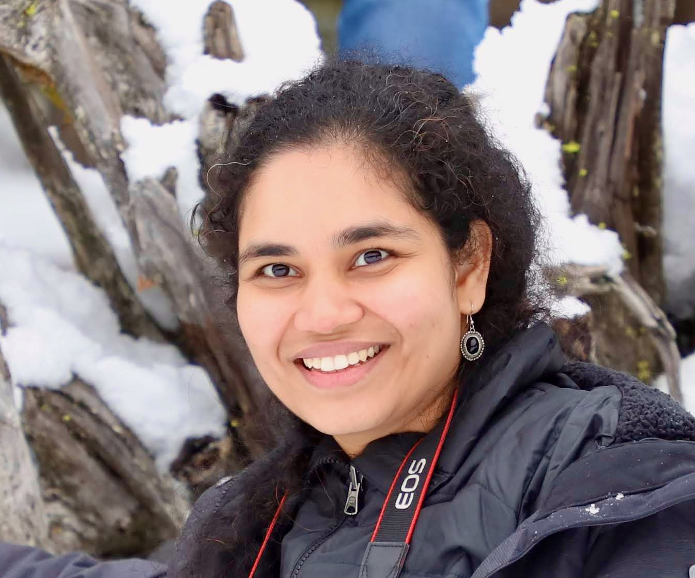
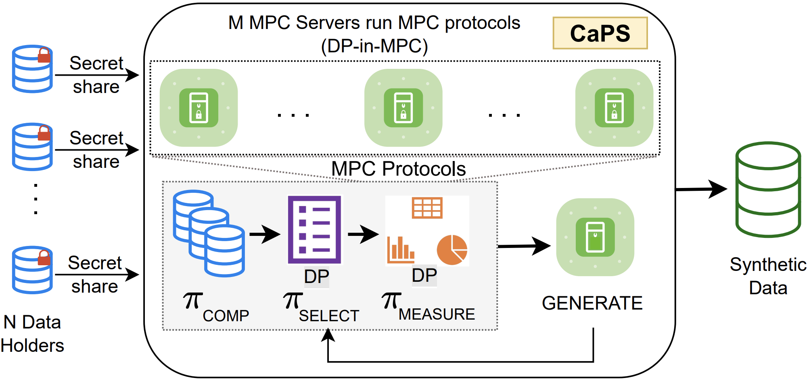
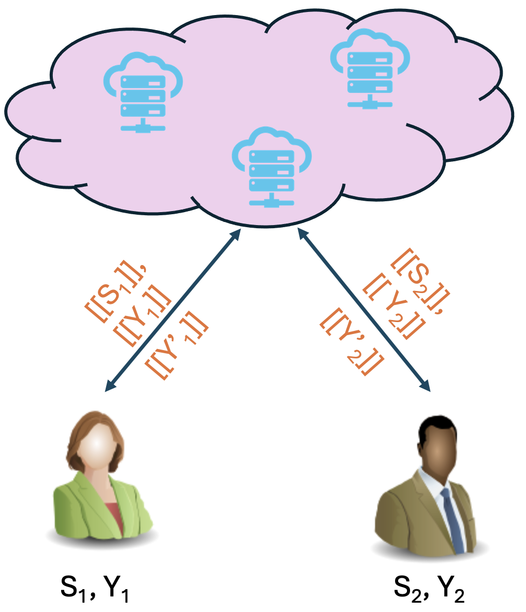
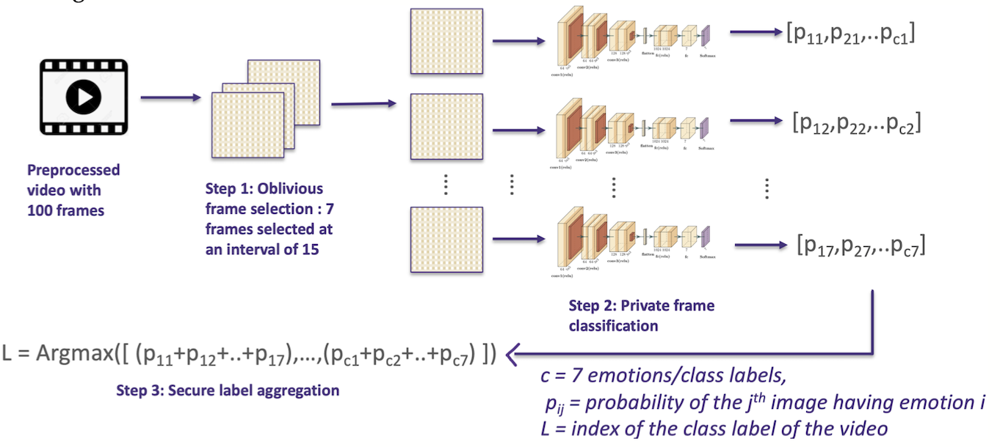

I am a postdoctoral researcher at the University of Washington eScience Institute and University of Washington Tacoma, focusing on privacy-preserving synthetic genomics data generation. My research interests are broadly in Responsible and Trustworthy AI.
I earned my Ph.D. in Computer Science in June 2025 with a thesis titled "Enhancing Privacy in AI: Differential Privacy in Multiparty Computation", advised by Dr. Martine De Cock and Dr. Anderson Nascimento in the School of Engineering and Technology at UW Tacoma. Prior to my PhD, I earned my M.S. in Computer Science & Systems from UW Tacoma (2020), with a thesis on privacy-preserving video classification.
I interned at Mila – Québec AI Institute as Research Intern (Fall 2021 - Winter 2022 and Summer 2022) under Dr. Golnoosh Farnadi. I also interned at JPMorgan Chase as an AI Research Associate (Summer 2023 and Summer 2024), and was awarded the 2023 JP Morgan Chase PhD Fellowship for my research on synthetic data generation. Before joining UW Tacoma, I spent 7 years in the Nuclear Power Corporation of India Ltd in the role of Scientific Officer, following my Bachelor's degree (Gold Medalist) from Jawaharlal Nehru Technological University Anantapur in 2009.
My research builds toward Responsible and Trustworthy AI — work spans four directions:



Full publication list → includes + 2 patents · publications in SatML, ECIR, PoPETS, PLOS · 10+ workshops at NeurIPS, AAAI, ICAIF, ISMB ·